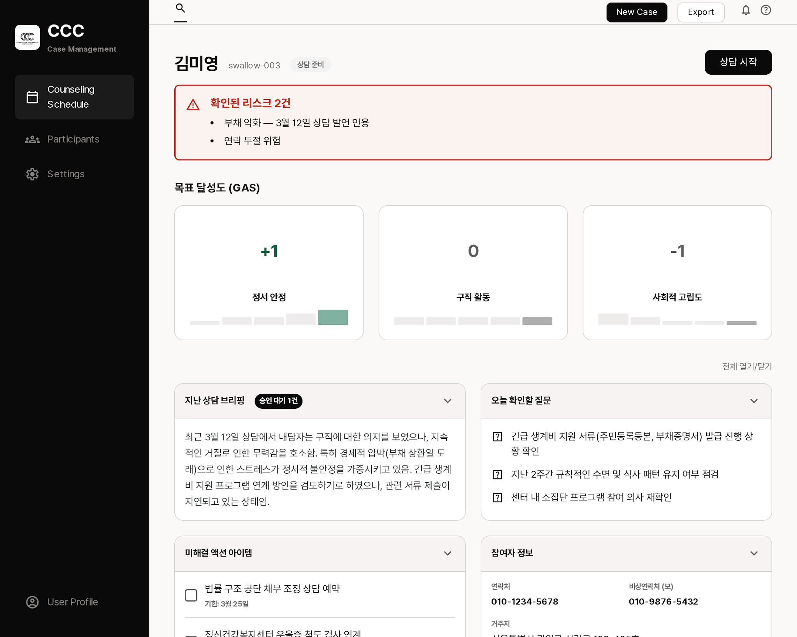
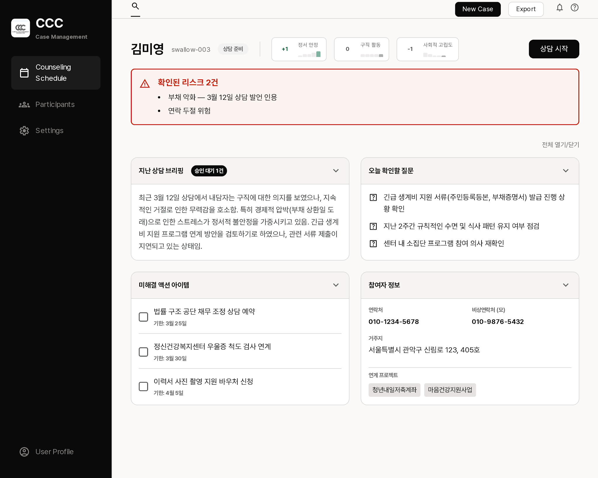
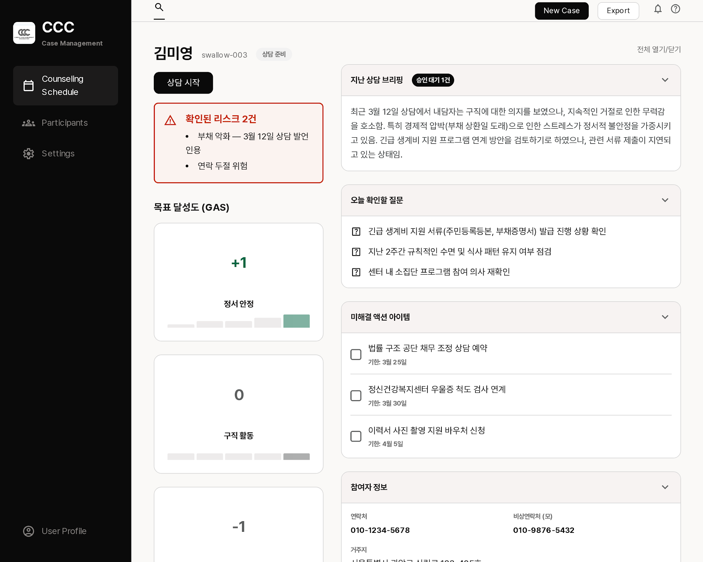
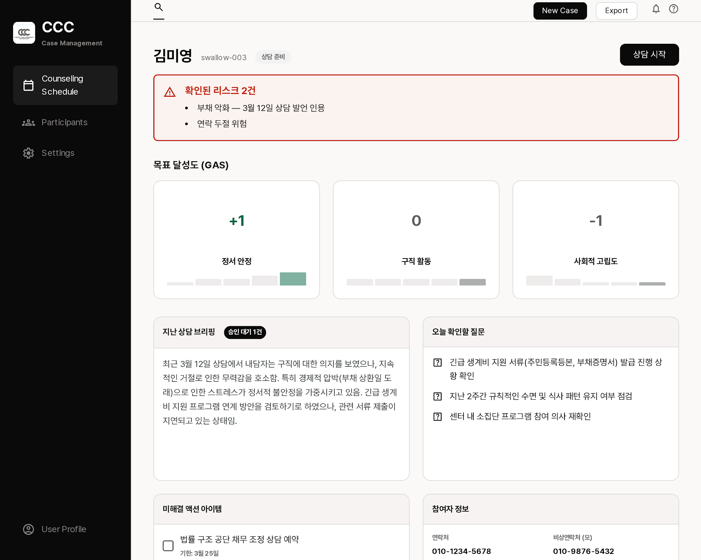

상담 준비 브리핑 — Stitch 레이아웃 탐색 4안

A. 기본추천D22 스펙 그대로
HERO → 리스크 배너 → GAS 3게이지 가로 → 아코디언 4종 2열. 현재 확정 스펙(D22)과 구조가 동일해 추가 결정 없이 2단계(Pencil 정밀화)로 직행 가능.

C. GAS 인라인D22 수정 필요
GAS를 HERO 우측에 칩으로 압축해 첫 화면에 4카드가 전부 들어옴 — 스크롤 최소화는 가장 우수. 다만 "원형 게이지 + 미니 추이"(D22)를 축소 표기로 바꾸는 결정이 필요.

B. 2컬럼 분할
좌측에 리스크+GAS 고정, 우측에 브리핑 콘텐츠. 리스크를 상시 대조할 수 있지만 좌측 GAS가 세로로 쌓여 스크롤이 가장 길어짐 — 15초 훑기에 불리.

D. 전부 펼침 그리드
아코디언 없이 4카드 고정 펼침. 한눈 보기는 좋으나 내용이 길어지면 카드 높이가 어긋나고, D22의 "전체 열기/닫기" 상호작용과 상충.
공통 관찰 (2단계에서 수정할 디테일)
① 사이드바 메뉴·상단 버튼이 영문(Counseling Schedule·New Case·Export) — 한글화 필요 ② GAS가 원형 게이지가 아니라 숫자+막대 추이로 그려짐 — D22는 원형 게이지 ③ 추이 막대의 그린이 SSOT #046645보다 밝은 세이지 톤 — 토큰 값으로 교정. 색 규율(리스크가 유일한 빨강·주의는 검정 반전 배지·웜 캔버스)은 4안 모두 준수.